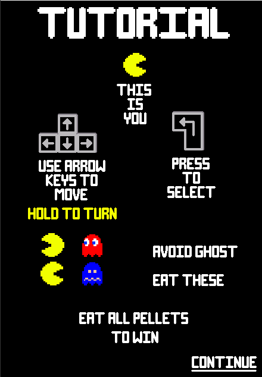
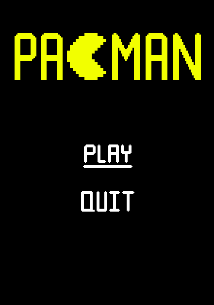
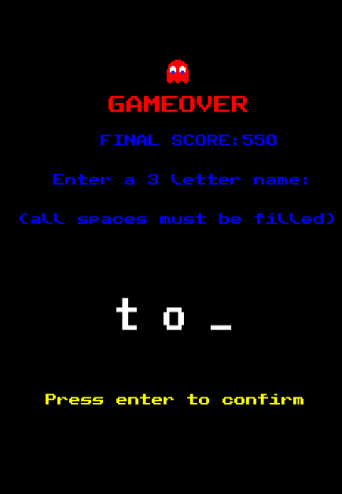

Pac-Man C++ Project


This is the first game I made without a game engine, which was created in 15 weeks using C++ and SFML, It helped me get a better understanding of C++, since I had to make the state machine myself. I always enjoyed Pac-Man as a kid, so I really enjoyed researching the specifications of pacman and coming up with my own implementation. I even made a highscore system using sql to create, update and display a database. The game also uses level generation function, that will create a render of a level based on a map given to it in ASCII. This allows for the addition of more levels with relative ease! The hardest part was giving the different ghosts different movement patterns based on their colour, but the easiest part was increasing the difficulty each level. All this required was some variables to be set at the start of a level to a value based on the level number.
- 
- 
- 